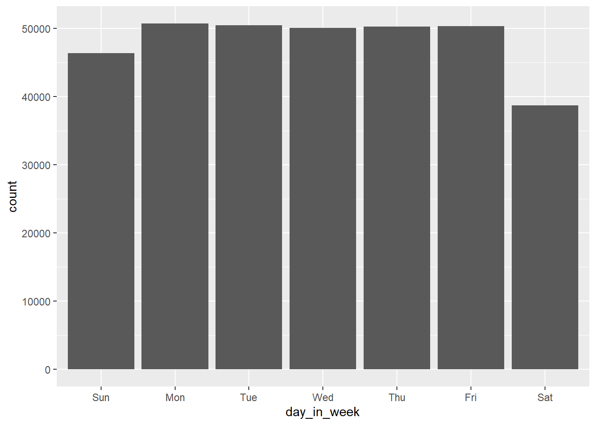
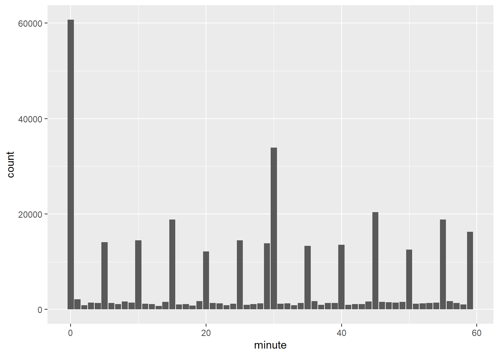
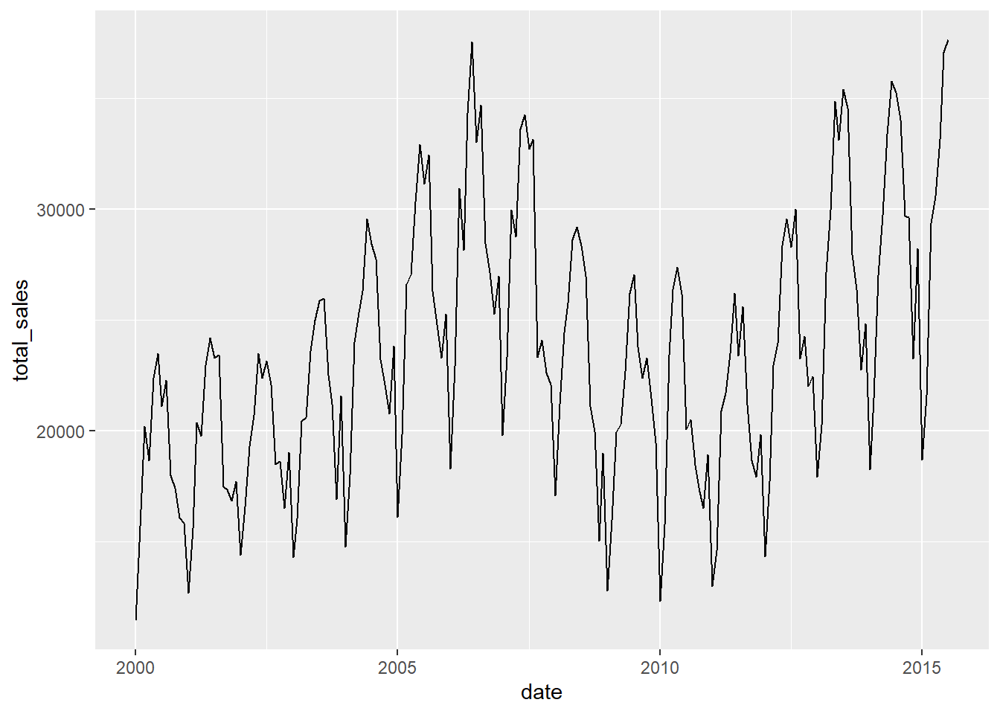
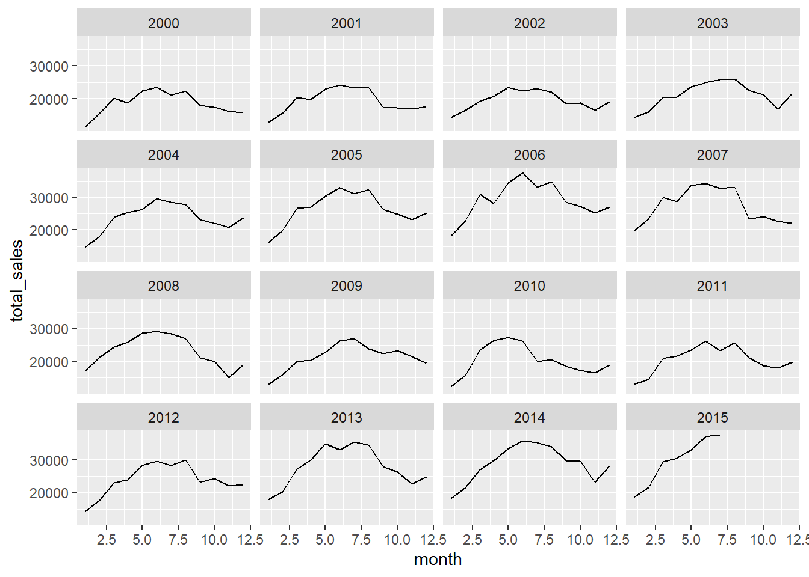

9 Dates and Times
In this worksheet, we will:
- Parse dates and times from strings into R-compatible formats using
lubridate - Manipulate dates and times, including extracting specific components (year, month, day, hour, etc.)
- Calculate differences between two dates/times
- Visualize time-based data trends and summarize data over time units
9.1 Datasets and Libraries
Let’s load tidyverse which contains the lubridate package and nycflights13 for datasets:
Here are the main datasets we will manipulate today:
In what format are dates/times reported in each dataset?
Only time_hour is in a date/time format.
9.2 Parsing dates and times
Parsing dates and times means converting a string or numeric representation of a date or time into a proper object that R can understand and work with.
9.2.1 R formats
Here are two typical date/time formats in R:
## [1] "2024-12-03"## [1] "2024-12-03 17:54:08 CST"## [1] "Date"## [1] "POSIXct" "POSIXt"By default, R considers:
dates as “yyyy-mm-dd” (year-month-day)
times as “hh:mm:ss” (hours:minutes:seconds)
date/times as “yyyy-mm-dd hh:mm:ss”
Here is an example of a date entered in the year-month-day but does R recognize it as a date?
## [1] "character"We can convert a character/string and convert it as a date in an R format:
## [1] "2024-10-03"## [1] "Date"Here are some examples of other formats of dates than can be converted:
## [1] "2024-10-03"## [1] "2024-10-03"## [1] "2024-10-03"## [1] "2024-10-03"## Warning: All formats failed to parse. No formats found.## [1] NA## [1] "2024-10-03"## [1] "2024-10-03"Similarly, we can convert strings into time:
## [1] "2024-10-03 15:15:00 UTC"# also check other date functions with _hms or _hm, or simply the function hm() and hms()
hm("03:15 PM")## [1] "3H 15M 0S"## [1] "3H 15M 0S"9.2.2 Combining date/time components
We can combine the different parts of a date with make_date() or also add time with make_datetime().
By default, the day on the date was set to the first day of the month.
9.2.3 Extracting part(s) of the date
On the contrary, we might want to extract some specific date/time information from a date:
## [1] 2024## [1] 12## [1] 49## [1] 3## [1] 3## [1] 17## [1] 54## [1] 9.162541Check the label and abbr options for month() and wkday():
## [1] December
## 12 Levels: January < February < March < April < May < ... < December## [1] Tue
## Levels: Sun < Mon < Tue < Wed < Thu < Fri < Sat9.2.3.1 Try it! In the flights dataset, extract the information of the weekday from the time_hour variable. Does each day have the same amount of flights?
# Write and submit code here!
flights |>
mutate(day_in_week = wday(time_hour, , label = TRUE, abbr = TRUE)) |>
ggplot() + geom_bar(aes(x = day_in_week))
Write sentences here.
9.3 Manipulating dates and times
9.3.1 Finding differences between dates and times
We can find date/time differences with difftime():
# How many days between now and the first day of the year?
difftime(now(), mdy_hms("1-1-2024 00:00:00 am"), units = "days")## Time difference of 337.996 days# What if we want to find the difference with another unit?
difftime(now(), mdy_hms("1-1-2024 00:00:00 am"), units = "weeks")## Time difference of 48.28514 weeks## Time difference of 8111.903 hours## Time difference of 486714.2 mins## Time difference of 29202850 secsNote that the output reports the time difference with a unit. If we would like to find the value of the difference, we can use the function as.numeric():
## [1] 337.9969.3.2 Summarizing date/time data
Depending on the level of detail we would like to focus on, we can aggregate the data by specific time units. For example, we can compare summaries over years, months, days of the week, or by the hour, minute, second.
9.3.2.1 Try it! We looked at the number of flights per day before. Compare the number of flights at another time unit. Do you notice any differences?

Write sentences here.
We can also represent the values of a variable over time:
# Comparing sales over time
txhousing |>
group_by(date) |>
summarize(total_sales = sum(sales, na.rm = TRUE)) |>
ggplot() + geom_line(aes(x = date, y = total_sales))
And compare if there is the same pattern over a repeating time unit (for example, months repeat every year):
# Comparing monthly sales for each year
txhousing |>
group_by(year,month) |>
summarize(total_sales = sum(sales, na.rm = TRUE)) |>
ggplot() + geom_line(aes(x = month, y = total_sales)) +
facet_wrap(~year)
9.3.3 A few remarks
Here are some common pitfalls to look out for:
Different date formats (e.g., MM/DD/YYYY vs. DD/MM/YYYY) can lead to incorrect parsing. Always specify the date format explicitly when converting strings to dates.
Take into account that not all years are 365 days (leap years), not all days are 24 hours (daylight saving time), and not all months have the same amount of days. Most
lubridatefunctions are designed to take those facts into account when manipulating dates/times.The time is not the same depending on where the data was collected. Convert dates/times between time zones with some
lubridatefunctions such aswith_tz().
## [1] "2024-12-04 00:54:12 CET"## [1] "2024-12-03 17:54:12 CST"9.4 Group Practice
Let’s explore birthdays from students in this class!
Enter your birthday (including year) on this spreadsheet. Once everyone has entered their birthdays, download the spreadsheet as a
.csvfile and import it inR.Does any birthday need to be recoded? Parse the birthday into a date format that R can work with.
Make an analysis of the birthdays and paste any plot or statistics you create here.